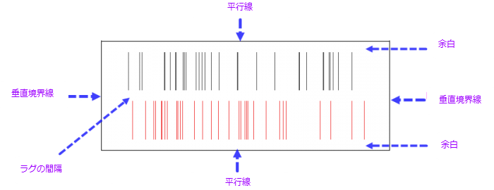
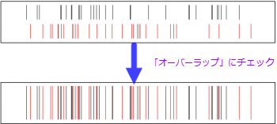

Origin 2017以降複数レイヤグラフのレイヤ切り替えにレイヤリストを使用できます。
デカルト座標で2D XYプロットのラグ表現を表示するには、X / Y軸をダブルクリックして軸ダイアログを開き、ラグタブに移動してカスタマイズを行います。
|
Origin 2017以降複数レイヤグラフのレイヤ切り替えにレイヤリストを使用できます。 |
このコントロールは、現在選択されている軸のラグパネルを表示または非表示にするために使用できます。
このチェックボックスを使用すると、下と上（左と右）軸で同じラグオプションを使用します。チェックされているとき、下と上（左と右）のオプションは共有されます。下と左の軸だけを変更すれば、その設定が上と右の軸にも反映されます。
現在の方向のラグを表示するためにプロットを選択します。デフォルトでは、<全て>は現在の方向のすべてのプロットに対してラグを表示するために選択されます。1つのプロットを指定したい場合は、テキストボックスの横にある矢印ボタンをクリックしてコンテキストメニューからプロットを選択します。
ラグ線の色を指定します。デフォルトでは、自動に設定されていますが、これはラグの色がプロットの色に準ずることを意味します。
ラグ線の色を指定します。
ラグ線の透過率を指定します。値は0〜100の範囲内のパーセントです。
ラグパネルの外観をカスタマイズします。

ラグパネルの高さを制御します。
値を50と設定すると、ラグパネルの高さは[(Layer Width + Layer Height)/2]*50%になります。
レイヤの幅と高さを確認するには、作図の詳細ダイアログのサイズタブを開きます。
現在の方向に複数のデータセットがある場合は、このチェックボックスをオンにして、異なるデータセットの罫線を重ね合わせることができます。

散布図ラグなど、すべての組み込みラグテンプレートの場合、このチェックボックスはデフォルトでオンになっており、さまざまなデータセットのラグラインが重なります（すべてのラグラインが整列されます）。
このチェックボックスをオフにすると、さまざまなデータセットの罫線が軸に垂直な方向に分割されます。
このオプションは重なりにチェックがついていないと利用できません。
重なりチェックボックスをオフにすると、さまざまなデータセットの罫線が軸に垂直な方向に分割されます。次に、パーセント値を入力して（20など、100未満にする必要があります）、さまざまなラグプロットの間隔を設定できます。
ラグパネルの高さまたは幅をサイズに設定します。
Gap = (Size - Size * Margin(%) *2) * Gap Between Rugs(%)
このオプションは、サイズ(%)オプションに基づいて、ラグパネルの下部と上部の余白を制御するために使用されます。
この値は50未満にする必要があります。50以上の値に設定しても、Originは値を0として扱います。
垂直境界線を表示するかどうかを指定します。
平行線を表示するかどうかを指定します。